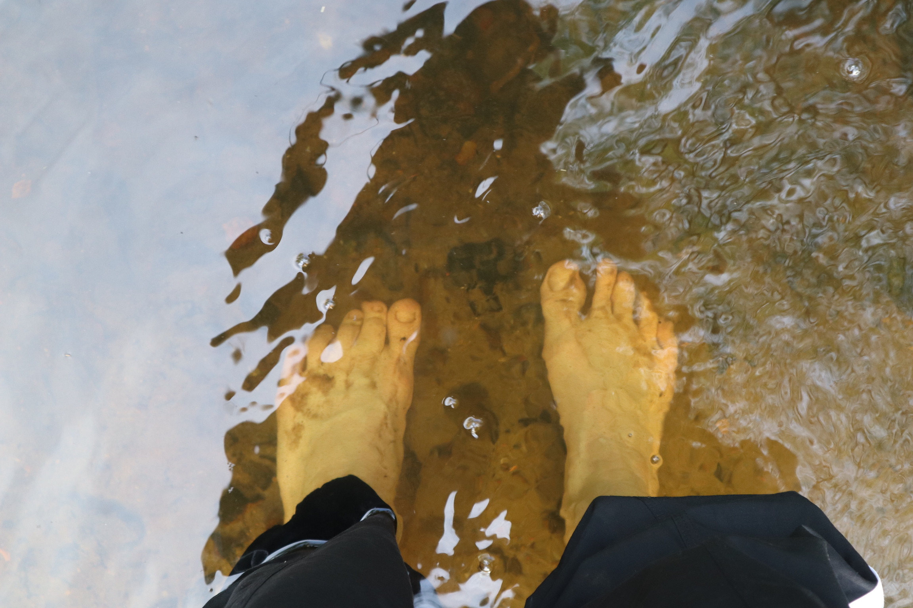
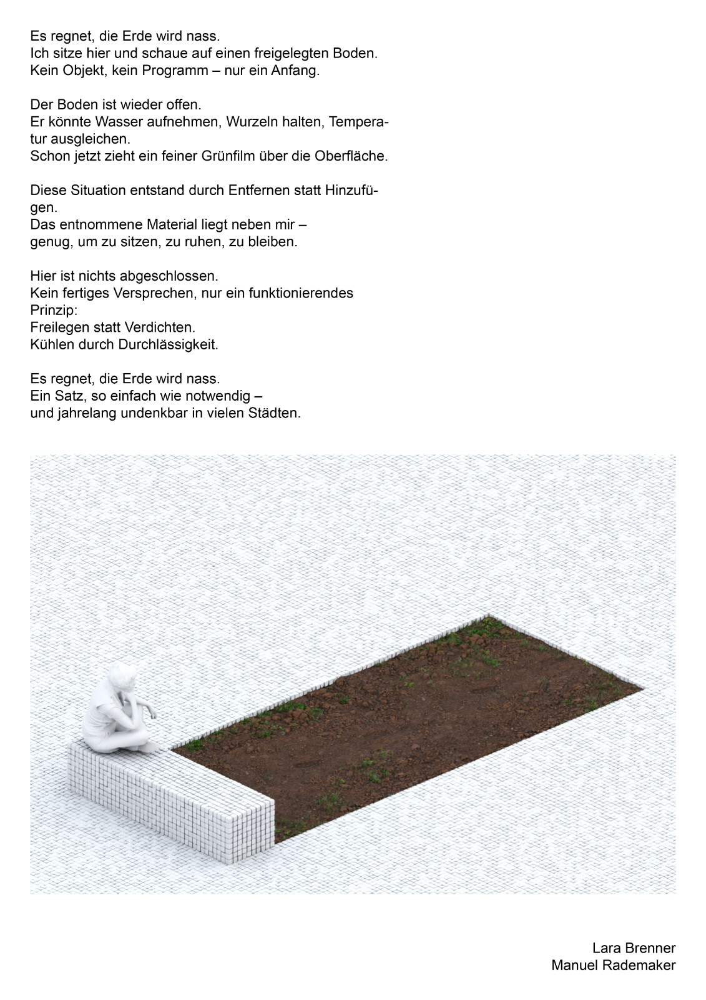
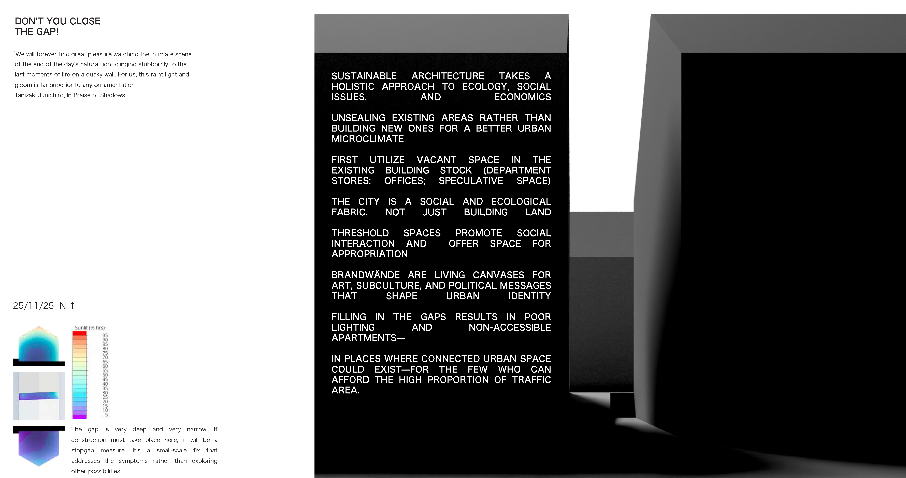
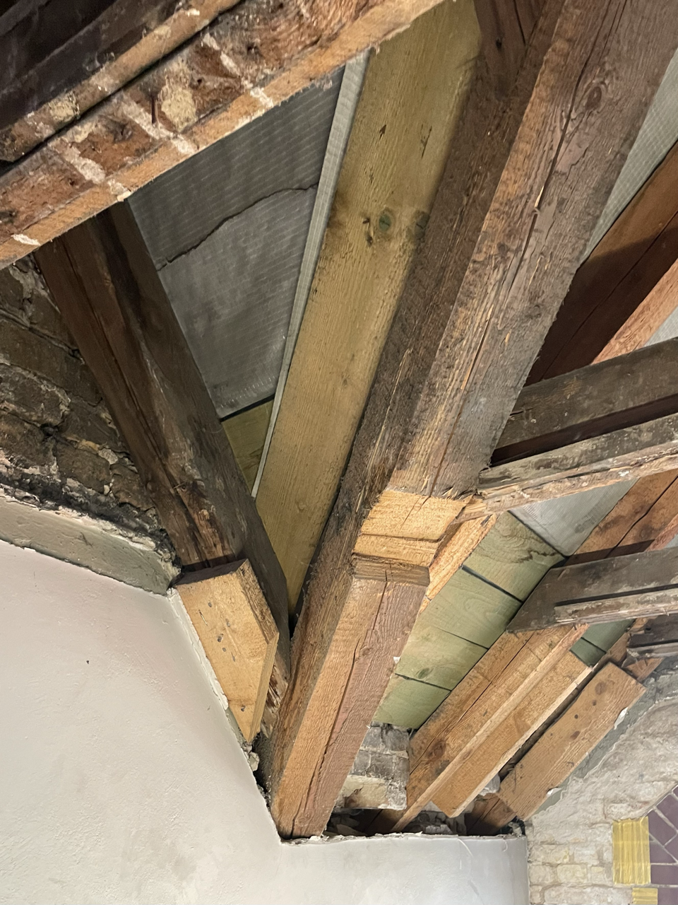
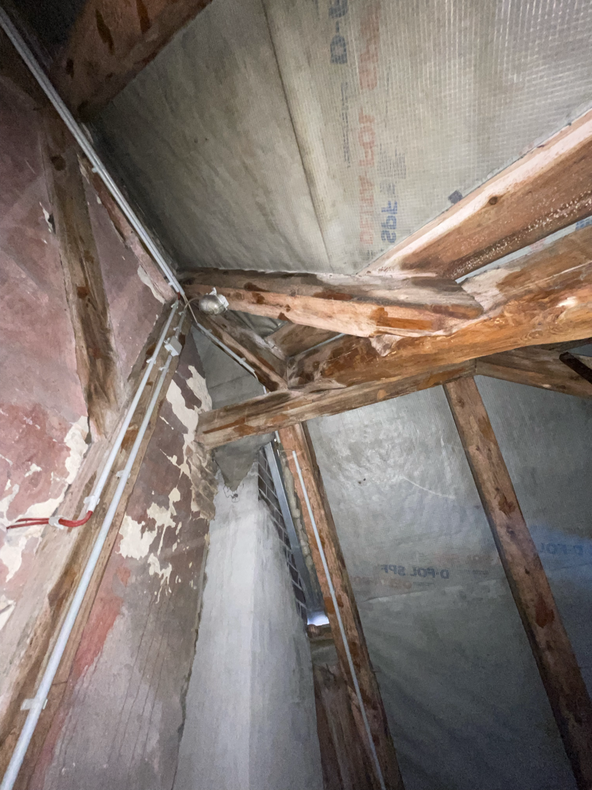
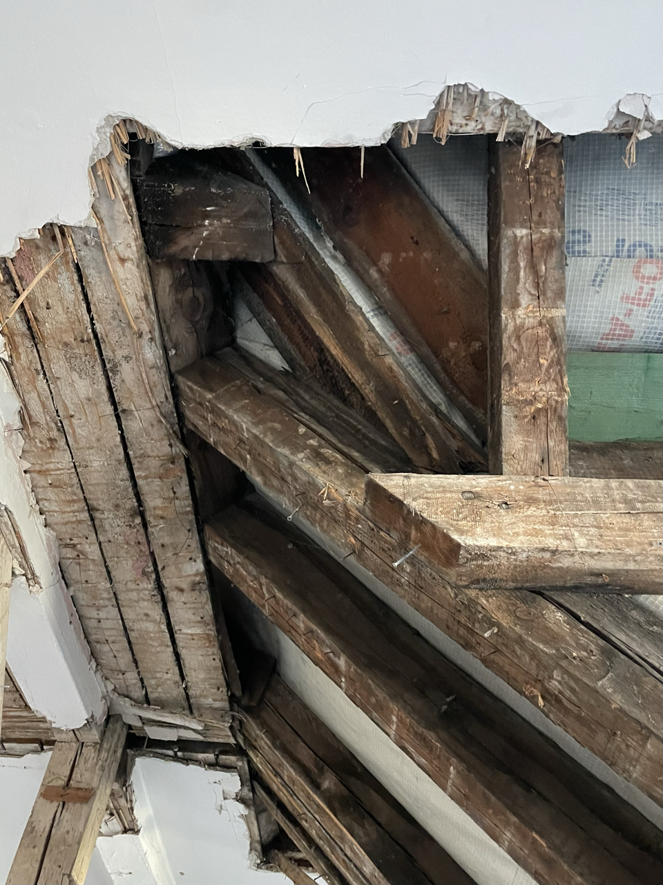

ich bewerbe mich um eine Stelle als Studentische Hilfskraft an Ihrem Lehrstuhl. Mein Interesse an der Arbeit von CUE geht aus meiner bisherigen Auseinandersetzung mit den ökologischen und sozialen Dimensionen städtischer Räume hervor — einem Interesse, das mein Studium, mein Engagement und meine Praxis von Anfang an geprägt hat.
Im Laufe meines Studiums wurde mir immer deutlicher, dass Architektur für mich nicht nur eine gestalterische Disziplin ist, sondern ein Werkzeug, um gesellschaftliche Strukturen sichtbar zu machen und mitzugestalten. Ich engagiere mich seit mehreren Semestern im studentischen Kollektiv perspektiv;wechsel, das ich mitgegründet habe. Unsere Vortragsreihen und Veranstaltungen setzen sich kritisch mit intersektional feministischen Fragen von Stadtwahrnehmung, Rezeption und Machtverhältnissen im gebauten Raum auseinander. Diese Arbeit hat mein Denken und mein Entwerfen stark geprägt — und mir gezeigt, wie produktiv kollektive Prozesse für den Diskurs und die Praxis der Architektur sein können.
Ich sehe Gestaltung, Organisation und Politik nicht als getrennte Felder, sondern als ineinander verschränkte Ebenen der Verantwortung. In meiner derzeitigen Tätigkeit als Werkstudentin bei ZRS Architekten bin ich in der Ausführungsplanung tätig und habe dabei großes Interesse an Detailfragen zu materialgerechtem Konstruieren, Bestandserfassung und Schadenskartierung entwickelt. Parallel dazu arbeite ich im Masterstudium an kartographischen und raum-zeitlichen Methoden zur Analyse städtischer Ökosysteme — zuletzt im Rahmen eines Transekts durch die Panketalniederung.
Arbeiten wie das Böden-Berlins-Seminar (SoSe 2025) zeigen, dass die raum-zeitliche Kartierung von Böden als kritische Praxis an der TU verankert ist. Mein Transekt durch die Panketalniederung versteht sich als Anschluss an diese Fragen — mit dem Fokus auf hydrologische Geschichte, Eigentumsverhältnisse und ökologische Bewohnbarkeit.
Neben Feminismus ist für mich vor allem Nachhaltigkeit ein Thema, zu dem ich mich fortlaufend weiterbilde. Der Bausektor ist am menschengemachten Klimawandel schwer mitverantwortlich und dringend reformationsbedürftig. In der Zukunft möchte ich mich genau dieser Aufgabe widmen und mich für nachhaltigere Städte einsetzen.
Ich freue mich sehr auf die Möglichkeit, Teil des Diskurses bei CUE zu werden.
Mit freundlichen Grüßen Lara Luise Brenner
Space Time Transect
mit Eliott Croubalian · SS 2026 · Semesterprojekt, laufende Arbeit

Das Transekt wurde als raum-zeitliches Kartierungsinstrument entwickelt, das geologische Schichtungen, Eigentumsverhältnisse, Vegetationsgeschichte und hydrologische Spuren gleichzeitig lesbar macht. Es durchquert die Panketalniederung und die Barnim Hochfläche und operiert mit historischen Karten von 1888 bis 2025.
Midterm-Stand, SS 2026. Das Projekt ist noch nicht abgeschlossen.
Es regnet, die Erde wird nass.
mit Manuel Rademaker

Eingereicht beim Wettbewerb 30 Quadratmeter Baukultur. Das Projekt hat nicht gewonnen.
Schließ die Lücke nicht!

Stegreif im Fach Strategien für nachhaltiges Planen und Bauen. Die Aufgabe lautete: In einer ost-west ausgerichteten Baulücke (4,0 m Breite, 22,5 m Länge, umgebende Bebauung 4 Geschosse zzgl. Satteldach) ca. 160 m² Wohnfläche zu entwerfen — darunter eine Wohnung für 4 Personen (100–130 m²) mit nicht einsehbarem Freiberbereich sowie eine separat vermietbare Einliegerwohnung (30–60 m²). Ziel war es, innerhalb schwieriger Parameter Strategien für gut belichteten, energieeffizienten Wohnraum zu entwickeln. Meine Abgabe wurde als nicht benotbar eingestuft und als nicht bearbeitet eingetragen.
Mapping Damage
ZRS Architekten Ingenieure, Berlin



Schadenskartierung auf Grundlage eines Schadensberichts und eigener Begehung des Gebäudes. Kartographische Auswertung und Darstellung der Schäden als Teil meiner Werkstudententätigkeit bei ZRS Architekten Ingenieure, Berlin.
Werkstudentin, ZRS Architekten Ingenieure, Berlin Ausführungsplanung, Gründachplanung, energetische Sanierung in Holzbauweise, Visualisierung, Point Cloud Processing
08–10/2023
Pflichtpraktikum, ZRS Architekten Ingenieure, Berlin